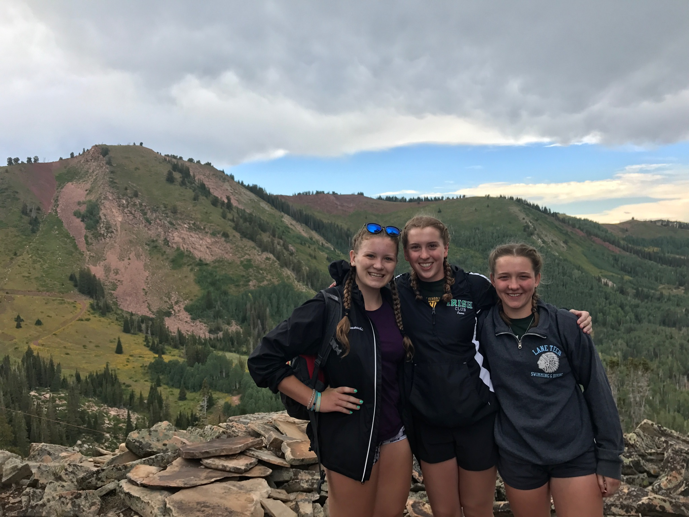
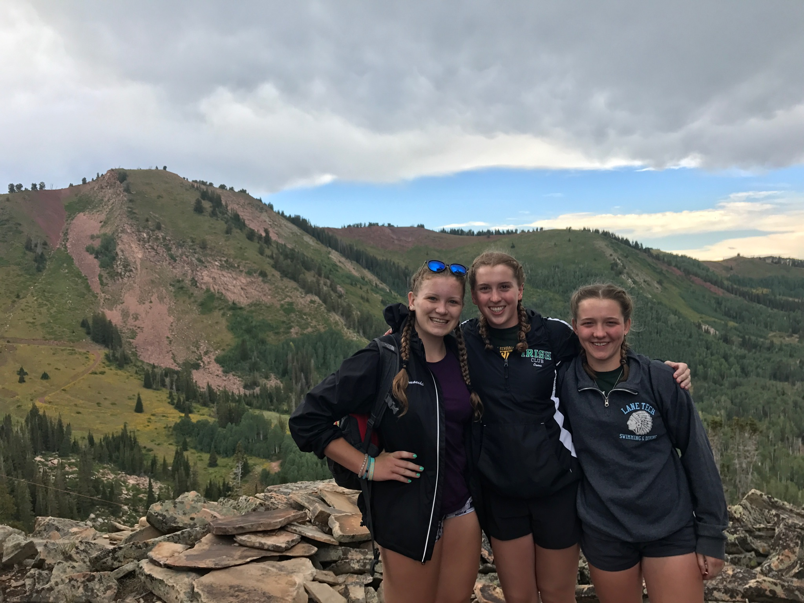

SWIMMING
 

I first learned to swim when I was five years old and I immediatley fell in love with the sport. When I was 8, my parents signed me up for a club team, the Iguanas swim club, where I swam competitivley. When I turned 13, I started to take dance more seriously and that is when I decided to take a break from swim. But, once I came to Lane for high school, I started swimming again for the school's team. During the season we practice every day before school from 6-7:15 and after school from 3:30-6:30.
This past summer, the Lane swim team took a trip to Park City, Utah for 8 days to swim. It was lots of fun, but also very hard because the altitude in Utah is higher which makes it hrder to breathe. Every day during the trip we swam twice a day for two hours each, went on a 3 mile run, and did some other form of land training. Most days we went on hikes, once we went kayaking, but my favorite was the mountain biking. The trip was very hard, but it was also really fun. I could notice a big difference in my technique and speed in the pool when I got home.
There are four strokes in swimming. There's butterfly, backstroke, breaststroke, and freestyle. A standard pool is 25 meters long. For races, you multiply 25 by the number of laps in the event, and that is how we name races. For example, four laps of breaststroke would be called the 100 breaststroke. I usually compete in freestyle because that is the stroke I am fastest at. At meets, I swim the 500 freestyle, which is 20 laps in the pool. It is one of the longest and hardest events to swim, but I've never been much of a sprinter, so long distance has always been easier for me.
Here is a link to the Lane Tech Aquatics Website, which has info on all the water sports at Lane (swimming, diving, water polo) as well as a pool record board which shows all the different events you can swim.